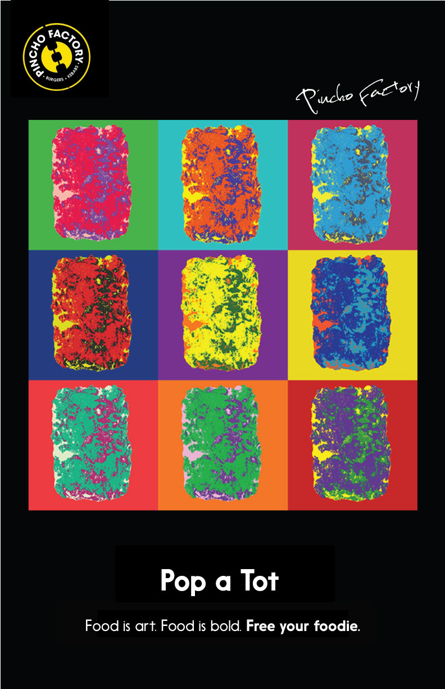
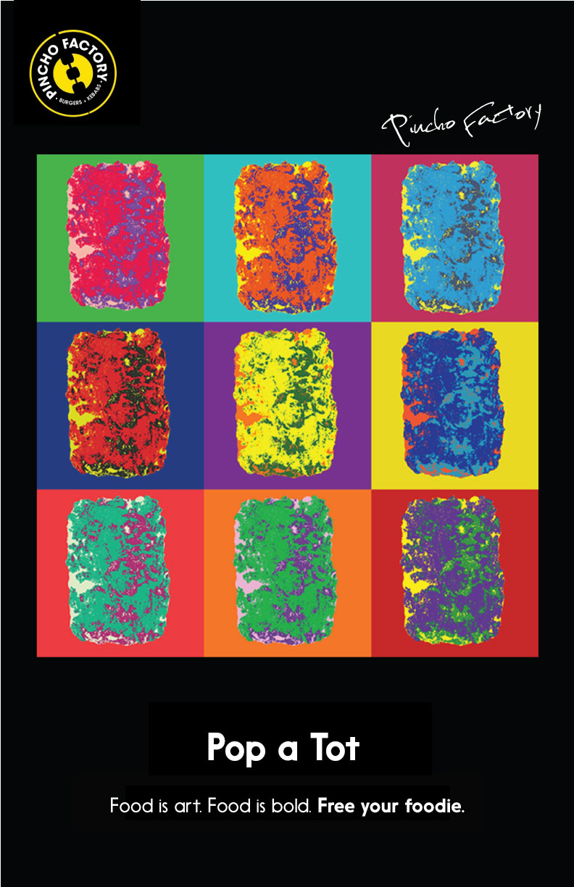

Pincho Factory
In a group of seven, we were challenged to create a fully-functioning mini-agency to develop a campaign that would be implemented by our client, Pincho Factory.
Pincho Factory is a restaurant in the fast casual segment that offers good prices without ever compromising quality. They offer award-winning burgers that differ from every other fast casual restaurants for the creativity in ingredients. What you get at Pincho, you probably won't get it anywhere else.
Using that as the main competitive advantage, the campaign aimed to highlight that creativity and quality, characteristics we discovered are important to 'foodies'. Our strategy then was to challenge the target audience, Millennials, to "Free your foodie."
This concept was brought to life in a campaign that shows that the creativity of the items sold on the menu is comparable to great works of art such as Van Gogh's starry night. Through this campaign we can educate the public about what Pincho Factory is about: unique high quality food that makes you feel like you're trying something new each time, and releasing the inner foodie we all have within.
Below are the print ads and snapchat filters we designed to spread this new message and challenge Millennials to free their foodies with Pincho Factory.
 
